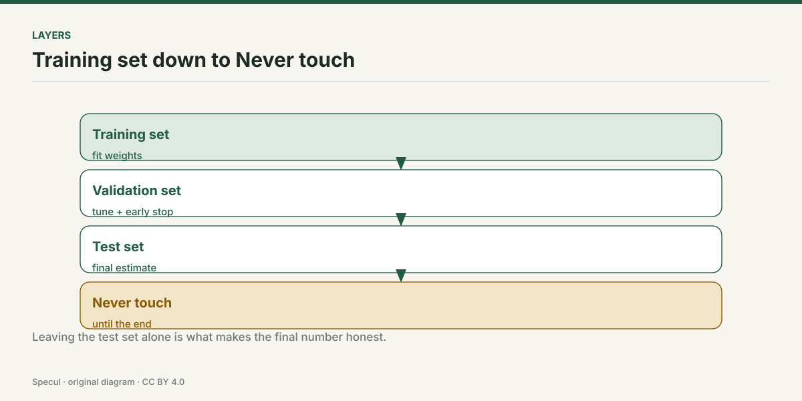

训练集与测试集Training Set, Test Set
Training Set, Test Set
解决什么问题What problem it solves
把数据分成两堆：一堆用来练，一堆留着考试。Split the data into two piles: one to practice with, one kept for the exam.
这是什么What it is
训练集供模型学习；测试集不参与训练，只用来评估。
分数只有来自测试集，才反映真实水平。
The training set is what the model learns from; the test set never takes part in training and is used only for evaluation.
A score reflects real ability only when it comes from the test set.

为什么需要知道Why it matters
同一模型在不同测试集上分数会不同。比较两个模型，先问它们考的是不是同一张卷。The same model scores differently on different test sets. When comparing two models, first ask whether they sat the same exam.
别名Chinese aliases
训练数据 · 测试数据
现在能做什么What you can do now
回到名词地图看第1段的其他 35 个词 →Back to the map: the other 35 terms in stage 1 →